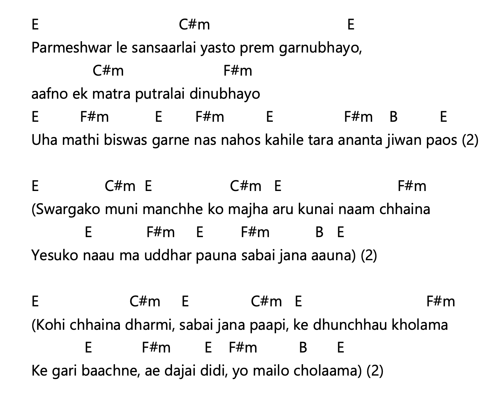
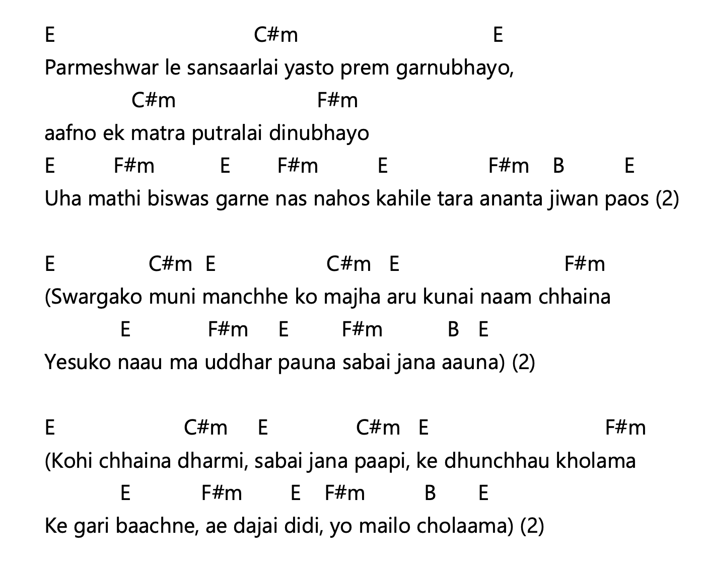
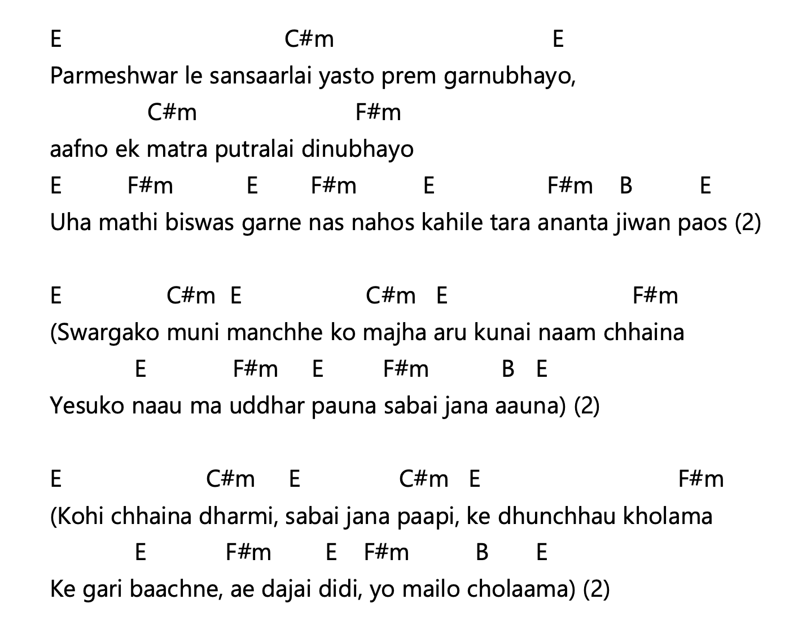
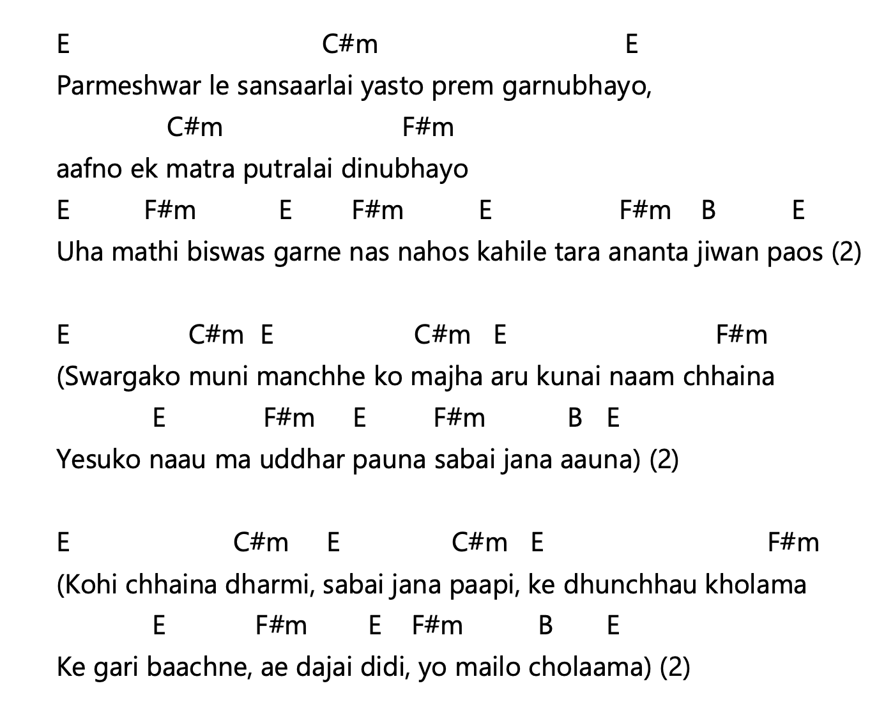
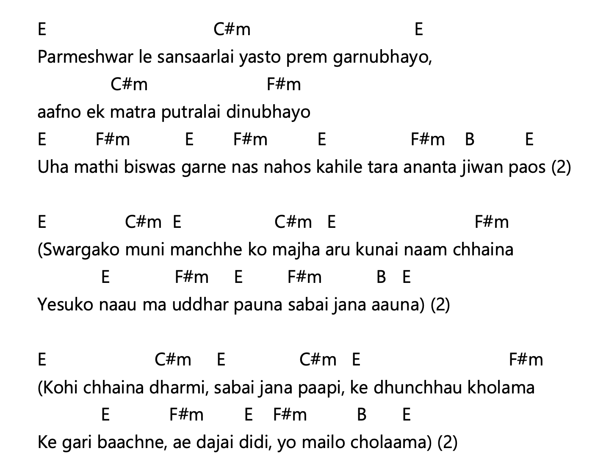
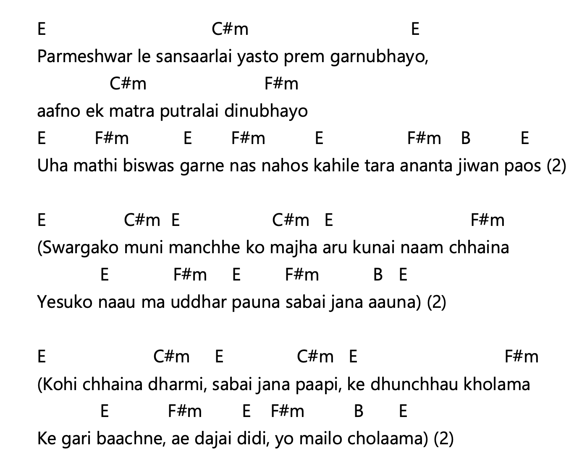

परमेश्वरले संसारलाई यस्तो प्रेम गर्नुभयो आफ्नो एक मात्र पुत्रलाई दिनुभयो उहाँमाथि विश्वास गर्ने नाश नहोस् कहीलै तर अनन्त जीवन पाओस् (२) स्वर्गको मुनी मान्छेको माझ अरु कुनै नाउँ छैन येशूको नाउँमा उद्धार पाउन सबै जना आउन (२) कोही छैन धर्मी सबै जना पापी के धुन्छौ खोलामा के गरी बाँच्ने ए दाजै दिदी यो मैलो चोलामा (२)